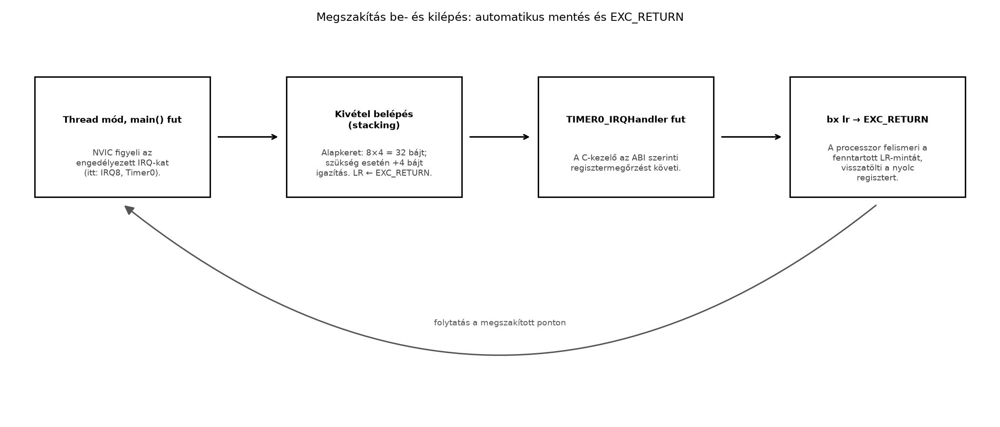
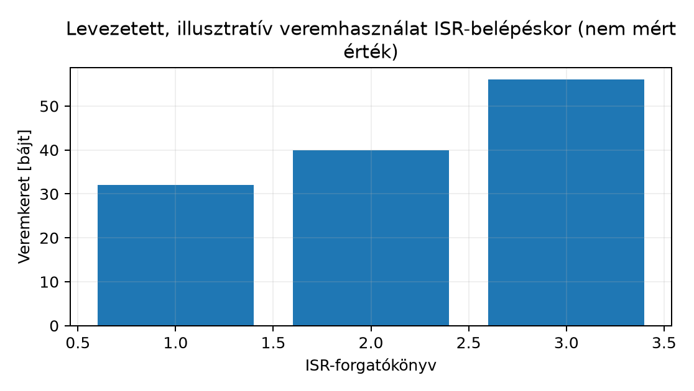

Tegyük fel, hogy az MPS2-AN385 (Cortex-M3) panelen egy 10 kHz-es mintavevő rutint kell futtatnunk: a periféria időzítője periodikusan megszakítást kér, a kezelőrutin kiolvassa az adatregisztert és beírja egy puff erbe, a főciklus pedig közben a puff ert dolgozza fel. A kérdés nem az algoritmus, hanem a szerződés: amikor a processzor a főciklus kellős közepén megszakítja önmagát, ki menti el azokat a regisztereket, amelyekben a megszakított kód éppen dolgozott? Ha ezt nekünk kellene megtenni, minden ISR (interrupt service routine, megszakításkezelő rutin) egy assembly trampolinnal kezdődne. A Cortex-M kivételmodellje ezt a munkát hardverre bízza — ennek pontos tartalma és következményei a jelen alfejezet tárgya.
Definíció (ISR). Az ISR olyan, a megszakított
végrehajtási folyamattól függetlenül lefutó vezérlési szál, amelyet a
processzor kivétel-belépés mechanizmusa hív meg, és amelynek
visszatérése nem BL-hez, hanem egy speciális, hardver által
előkészített visszatérési mechanizmushoz kötődik. Thumb-2/Armv7-M ISA
kontextusban az ISR „argumentumai” nincsenek: a hívó fél (a megszakított
kód) regiszterállapota a verembe kerül, nem paraméterlistába.
Definíció (vektortábla-bejegyzés). A vektortábla
egy, a kódtartomány legelején elhelyezkedő, 4 bájtos szavas tömb,
amelynek
-edik
szava a
sorszámú kivétel belépési pontjának címe. Az n = 0 slot nem
cím, hanem a kezdeti veremmutató (_estack) értéke; az
n = 1 a reset-vektor. A rendszerkivételek 1–15 sorszámot
kapnak, az externálisan kért megszakítások (IRQ) sorszámozása 16-tól
indul, azaz az IRQn számú megszakítás táblaindexe
,
bájt-offszete pedig:
Ez az összefüggés tisztán levezethető: minden bejegyzés egy 32 bites
szó, és előtte 16 rendszerkivétel-slot áll. Például az MPS2
IRQ8 (CMSDK Timer0) bejegyzése a
bájt-offszetre esik.
A tábla tartalma és a C függvénynév között nincs mágikus kapcsolat: a
linker annyit lát, hogy az egyik fordítási egységben (a startup
assembly-fájlban) egy .word TIMER0_IRQHandler direktíva egy
szimbólumra hivatkozik, másutt pedig egy C függvény definiálja
ugyanezt a szimbólumot. A tábla csak a szimbólum címe
iránt érdeklődik. Ez a név–cím kapcsolat a regisztrálás teljes
mechanizmusa. A jellemző gyakorlat a gyenge szimbólum (weak symbol) és a
Default_Handler-re mutató alias:
Az alábbi részlet csak a .vectors
szekció, nem önálló fájl. Az IRQ8-ig szóról szóra teljes: minden
indexnek valódi szó felel meg. A hozzá tartozó
Reset_Handler, Default_Handler és a gyenge
aliasok a kanonikus lab-startup.s-ben vannak (Startup kód), és a kidolgozott példa pontosan
ezekkel a sorokkal bővíti azt:
/* Vektortábla-részlet (csak a .vectors szekció) — Thumb-2 / Armv7-M ISA */
.section .vectors,"a",%progbits
.align 2
.word _estack /* 0 (0x00): kezdeti SP */
.word Reset_Handler /* 1 (0x04) */
.word NMI_Handler /* 2 (0x08) */
.word HardFault_Handler /* 3 (0x0C) */
.word MemManage_Handler /* 4 (0x10) */
.word BusFault_Handler /* 5 (0x14) */
.word UsageFault_Handler /* 6 (0x18) */
.word 0, 0, 0, 0 /* 7-10 (0x1C-0x28): fenntartott */
.word SVC_Handler /* 11 (0x2C) */
.word DebugMon_Handler /* 12 (0x30) */
.word 0 /* 13 (0x34): fenntartott */
.word PendSV_Handler /* 14 (0x38) */
.word SysTick_Handler /* 15 (0x3C) */
.rept 8
.word Default_Handler /* 16-23 (0x40-0x5C): IRQ0-IRQ7 */
.endr
.word TIMER0_IRQHandler /* 24 (0x60): IRQ8 — ide kerül a C függvény címe */
/* gyenge alapértelmezés: ha a felhasználó nem definiálja, ide köt */
.weak TIMER0_IRQHandler
.thumb_set TIMER0_IRQHandler, Default_HandlerKét részlet magyarázatra szorul. Egyrészt a 4 bájtos szóba kerülő
érték nem a függvény „nyers” címe, hanem annak Thumb-bittel jelölt
változata; a Thumb-2 szimbólumok címe eleve páratlan (LSB = 1), és a GAS
.thumb_set illetve a C fordító által előállított
szimbólumok ezt automatikusan hordozzák. Ha kézzel írnánk be páros
címet, a processzor a kivétel belépésekor hardverhibába (HardFault)
futna. Másrészt a .weak + .thumb_set minta
megvalósítja azt, hogy a vektortáblát ne kelljen újrafordítani, amikor
valamelyik kezelőt implementáljuk: a linker a gyenge szimbólumot a
valódi definícióval cseréli. Az alapértelmezett kezelő tipikusan egy
végtelen ciklus, ami rögtön megmutatja a hibát debugging közben.
Kivétel belépésekor a hardver, mielőtt egyetlen utasítást is
végrehajtana a kezelőből, nyolc regisztert a verembe ír. A verem a
CONTROL.SPSEL és a belépéskori mód függvényében az
MSP vagy a PSP — a pontos választás az
EXC_RETURN értékéből olvasható vissza. A keret elrendezése
fix, a veremmutató a legalacsonyabb címre mutat:
| Offszet az SP-től | Tartalom | Megjegyzés |
|---|---|---|
+0x00 |
R0 | argumentum / munkaregiszter |
+0x04 |
R1 | argumentum / munkaregiszter |
+0x08 |
R2 | argumentum / munkaregiszter |
+0x0C |
R3 | argumentum / munkaregiszter |
+0x10 |
R12 | scratch (IP) |
+0x14 |
LR (R14) | a megszakított kód visszatérési címe |
+0x18 |
PC (R15) | folytatási cím: ahol a visszatérés után a végrehajtás folytatódik |
+0x1C |
xPSR | állapotjelzők + IPSR kivételszám |
Az SP tehát 32 bájttal csökken. Ha a belépéskori SP nem volt 8 bájt
szerint igazítva, a mag további 4 bájtot hagy ki: ez az igazítási szó a
keret fölött, a magasabb címen (+0x20), az
xPSR és a belépés előtti SP között van. A fenti offsetek ezért ettől nem
változnak, a kihagyást pedig a mentett xPSR 9. bitje jelzi, hogy a
visszatérés pontosan visszaadhassa. Ez az elrendezés architekturális
szabály, nem QEMU- vagy hardverfüggő részlet.
A mentett PC általánosan folytatási cím. Megszakításnál ez a következő, még végre nem hajtott utasítás. Szinkron hibánál gyakran maga a hibát okozó utasítás, de nem mindig: egy pontatlan (imprecise) BusFault esetén a mentett PC egy később végrehajtott utasításra mutathat. A Cortex-M3-nak nincs FPU-ja, ezért itt mindig ez a 8 szavas keret jön létre. A lebegőpontos regisztereket is tartalmazó kiterjesztett keret csak FPU-s magokon (Cortex-M4F, M7) fordul elő.
Levezetés: miért pontosan ez a nyolc regiszter? Az AAPCS szerint a hívott függvény szabadon felülírhatja az R0–R3 és R12 regisztereket (argumentum- és scratch-regiszterek), valamint az LR-t; a hívó felelőssége ezek megőrzése, ha értékükre a hívás visszatérése után szüksége van. A hardver által mentett halmaz pontosan ez a caller-saved halmaz, kiegészítve a PC-vel és az xPSR-rel, amelyek a megszakított folyamat folytatásához elengedhetetlenek. Az R4–R11 (callee-saved) regisztereket nem menti a hardver, mert azokat — az AAPCS szerint — úgyis annak kell megőriznie, aki használja: vagyis az ISR-nek, a fordító által generált szokásos prológusban. Ez a megfigyelés az egész alfejezet kulcsa.
Definíció (automatikus context-mentés, stacking). A
kivétel belépésének mikroarchitekturális lépéssorozata, amely a
caller-saved regisztereket és a folytatási állapotot a verembe írja,
majd az EXC_RETURN kódot az LR-be tölti, és a PC-t a
vektortábla bejegyzésére állítja.
Az automatikus mentés miatt a kezelő belépésekor a regiszterállapot már „mentve van” pontosan azon a szerződésen keresztül, amit a C fordító a függvényhívásoknál amúgy is elvár. A C-ben megírt ISR számára a helyzet megegyezik egy közönséges függvényhívással: az R0–R3 és R12 szabadon használható, az R4–R11-et használat előtt meg kell őrizni (ezt a fordító megteszi), az LR-t pedig csak akkor kell menteni, ha az ISR további függvényt hív. Nem kell assembly trampolin, mert a hardver már elvégezte a hívói oldal munkáját. A visszatérést sem kell kézzel megírni: a fordító szokásos epilógusa az LR-ben kapott EXC_RETURN értéket juttatja a PC-be, és ez indítja el a kivétel-kilépést.
Az EXC_RETURN fogalmi szinten a következő: kivétel
belépésekor az LR nem visszatérési címet, hanem egy fenntartott
bitmintát kap, például 0xFFFFFFF9 (Thread mód,
MSP), 0xFFFFFFFD (Thread mód,
PSP) vagy 0xFFFFFFF1 (Handler mód,
MSP). Amikor a kezelő az LR-en keresztül tér vissza, a
processzor felismeri ezt a mintát, és nem ugrást, hanem
kivétel-kilépést hajt végre: visszatölti a nyolc regisztert, és
a megszakított ponton folytatja. Az ISR-t tehát nem kell „különleges”
módon megírni. A kivétel-kilépést bármely, Handler módban megengedett
PC-író utasítás kiváltja, ha az EXC_RETURN-értéket tölti a PC-be: a
bx lr, a pop {..., pc}, az ldm a
PC-vel a listában vagy egy ldr pc, [...]. A
levélfüggvényként fordított kezelő tipikusan bx lr-rel
zárul, a más függvényt hívó kezelő push {..., lr} /
pop {..., pc} párral; egyiket sem kell kézzel írni. A GCC
__attribute__((interrupt)) Armv7-M-en érvényes, de nem
kötelező: a kivételtípust figyelmen kívül hagyja, és azt jelzi, hogy a
függvény csak 4 bájtra igazított SP-vel is meghívódhat, ezért a prológus
8 bájtra igazít. A belépéskori hardveres igazítás
(CCR.STKALIGN = 1, a Cortex-M3 r2p0-tól alapértelmezés)
mellett a sima void f(void) is helyes.
Az alábbi ábra a teljes belépés–futás–kilépés ciklust foglalja össze,
a később bemutatott TIMER0_IRQHandler példáján:

A mentett regiszterek mennyisége jól szemlélteti, mennyit spórolunk. Az alábbi ábra és táblázat levezetett értékeket mutat: a hardveres keret fix 32 bájtja fölé a fordító csak azt teszi, amit az ISR ténylegesen használ.

| Eset | Hardver | Fordító | Összesen |
|---|---|---|---|
| Üres ISR (nem hív más függvényt) | 32 B | 0 B | 32 B |
| ISR, amely C függvényt hív | 32 B | LR + 4 B igazítás = 8 B | 40 B |
| ISR, amely R4–R7-et is használ és hív | 32 B | 5 szó → 8-ra kerekítve = 24 B | 56 B |
Itt rejlik az alfejezet leggyakoribb gyakorlati csapdája, és fontos
szétválasztani két fogalmat. Az NVIC pending bit (a
korábbi alfejezetben tárgyalt ISPR/ICPR
regiszterpár) a megszakításkérésnek a processzor oldali tárolója. Külső,
periféria által kért megszakítás esetén ezt a bitet a hardver
automatikusan törli, amikor a kivételt belépésként
elfogadja — tehát az ISR-nek ezzel nem kell foglalkoznia. A
periféria saját megszakításjelzője viszont egyáltalán
nem törlődik magától: amíg a periféria jelzője be van állítva, addig a
kéréssor továbbra is aktív, és az NVIC a kezelő visszatérése után
azonnal újra pending állapotba kerül.
Definíció (periféria pending-jelző). A periféria
saját állapotregiszterében tárolt bit (gyakran
INTSTATUS/RIS/MIS néven), amely a
kérést addig tartja, amíg azt szoftveresen nem törlik (írás-1-hatású
INTCLR regiszterbe, vagy a status regiszter
olvasásával).
A következmény drámai: elfelejtett törlés esetén az ISR visszatér, a processzor azonnal újra belép ugyanabba a kezelőbe, és a főciklus soha nem kap processzort. Ezt nevezzük megszakítási viharnak (interrupt storm). A tünet jellegzetes: a rendszer „él” (az óra jár, a LED villog, ha az ISR-ben van a villogtatás), de a főciklus első utasítása után mindig megszakadás következik, és a megszakításszámláló a valóságosnál nagyságrendekkel gyorsabban nő.
Ezért az ISR szerkezeti vázlata mindig: adat kiolvasása → a periféria pending-jelzőjének törlése → feldolgozás. A törlést érdemes a feldolgozás elé tenni (a lehető leghamarabb az adat kiolvasása után), hogy egy hosszabb feldolgozás közben bekövetkező újabb esemény ne vesszen el.
Munkakönyvtár: ~/arm-labor/cm/a070/ —
az alfejezet minden laborfájlja ide kerül, és minden parancs innen
futtatandó (a könyvtárrendet a Labor-alapkörnyezet alfejezet írja le).
mkdir -p ~/arm-labor/cm/a070
cd ~/arm-labor/cm/a070A linker script és a startup a II. rész kanonikus párja (Linker script alapjai, Startup
kód), a vektortábla ellenőrzője pedig a Vektortábla alfejezet
lab-check-vectors.py-ja. A linker script változatlan; a
startup másolatának vektortábláját egyetlen, gépileg alkalmazható
lépéssel bővítjük a Timer0 (IRQ8) bejegyzésével:
cp ~/arm-labor/cm/a065/lab-mps2.ld .
cp ~/arm-labor/cm/a066/lab-startup.s lab-a070-startup.s
cp ~/arm-labor/cm/a064/lab-check-vectors.py .
cat > lab-a070-irq.inc <<'EOF'
/* 16-tól: külső IRQ-k; a Timer0 = IRQ8 a 24. index, előtte 8 helyet ki kell tölteni */
.rept 8
.word Default_Handler /* 0x40-0x5C: IRQ0-IRQ7 (itt nem használt) */
.endr
.word TIMER0_IRQHandler /* 0x60: IRQ8 (Timer0) */
EOF
sed -i '/\.word SysTick_Handler/r lab-a070-irq.inc' lab-a070-startup.s # a SysTick sor után
# gyenge alias: kezelő nélkül is linkelhető
echo ' lab_default_handler TIMER0_IRQHandler' >> lab-a070-startup.s
# ellenőrzés: a bővített tábla vége
sed -n '/\.word SysTick_Handler/,/^$/p' lab-a070-startup.sA sed mintája csak a vektortábla
.word SysTick_Handler sorára illeszkedik, a fájl végén lévő
lab_default_handler SysTick_Handler aliasra nem. A fel nem
használt IRQ-helyek a kanonikus Default_Handler-re
mutatnak. Az echo sor a kanonikus
lab_default_handler makróval a fájl végére egy
gyenge, Default_Handler-re mutató aliast
fűz a használt kezelőhöz is. A C-fájl erős definíciója ezt felülírja, de
ha egy build a kezelőt nem tartalmazza, a KEEP-pel
megtartott vektortábla hivatkozása akkor sem marad feloldatlan. Ezek
valódi táblaszavak, nem megjegyzések, mert csak így
kerül a használt kezelő a megfelelő indexre
().
A példa a CMSDK APB Timer0-t használja. A regisztercímek a QEMU
mps2-an385 machine dokumentált memóriatérképéből
származnak, de a pontos offszetek és a CTRL mezőkiosztás a
QEMU-verzió és a CMSDK specifikáció függvényében
ellenőrzendő (lásd a záró szakaszt).
/* lab-a070_isr.c — Thumb-2 / Armv7-M ISA */
#include <stdint.h>
#define CMSDK_TIMER0_BASE 0x40000000UL /* MPS2-AN385, CMSDK APB0 */
#define CMSDK_TIMER0_CTRL (*(volatile uint32_t *)(CMSDK_TIMER0_BASE + 0x00))
#define CMSDK_TIMER0_RELOAD (*(volatile uint32_t *)(CMSDK_TIMER0_BASE + 0x08))
/* Nincs külön INTCLR regiszter: az INTSTATUS-ba írt 1 törli a pendinget (write-1-to-clear). */
#define CMSDK_TIMER0_INTSTATUS (*(volatile uint32_t *)(CMSDK_TIMER0_BASE + 0x0C))
#define NVIC_ISER0 (*(volatile uint32_t *)0xE000E100UL)
#define TIMER0_IRQn 8u
#define TIMER_CTRL_ENABLE (1u << 0)
#define TIMER_CTRL_IRQEN (1u << 3) /* bitpozíció: CMSDK spec. ellenőrizendő */
volatile uint32_t g_tick; /* kiszolgált megszakítások száma: CSAK az ISR írja, monoton nő */
/* a főciklus által feldolgozott események; GDB-vel figyelhető */
volatile uint32_t g_events;
/* A szimbólumnév a vektortábla 0x60 offszetén lévő .word operandusa. */
void TIMER0_IRQHandler(void) /* nincs kézzel írt assembly trampolin/prológus; a fordító mentései a disassemblyben láthatók */
{
CMSDK_TIMER0_INTSTATUS = 1u; /* 1. periféria pending-jelző törlése (write-1-to-clear) */
g_tick++; /* 2. az esemény rögzítése; a főciklus ebből értesül */
}
int main(void)
{
CMSDK_TIMER0_RELOAD = 0x00FFFFFFu; /* lassú, szemléltető periódus */
CMSDK_TIMER0_CTRL = TIMER_CTRL_ENABLE | TIMER_CTRL_IRQEN;
/* esetleges korai pending törlése (write-1-to-clear) */
CMSDK_TIMER0_INTSTATUS = 1u;
NVIC_ISER0 = (1u << TIMER0_IRQn); /* engedélyezés, lásd a069 */
uint32_t seen = 0; /* a főciklus saját állapota: eddig látott események */
for (;;) {
uint32_t now = g_tick; /* egyetlen igazított 32 bites olvasás */
if (now != seen) {
g_events += now - seen; /* az előző kör óta érkezett MINDEN esemény */
seen = now;
}
}
}A build és futtatás:
# ~/arm-labor/cm/a070 — target: qemu-system-arm (MPS2+ AN385)
# fájlok: lab-mps2.ld, lab-a070-startup.s (+ lab-a070-irq.inc), lab-a070_isr.c, lab-check-
# vectors.py
arm-none-eabi-gcc -mcpu=cortex-m3 -mthumb -ffreestanding -nostdlib \
-Wall -Wextra -g3 -O1 -T lab-mps2.ld \
lab-a070-startup.s lab-a070_isr.c \
-o lab-a070.elf
python3 lab-check-vectors.py lab-a070.elf 1=Reset_Handler 24=TIMER0_IRQHandler
qemu-system-arm -machine mps2-an385 -cpu cortex-m3 -nographic \
-gdb tcp::3333 -S -kernel lab-a070.elfA -S és a GDB-kapcsolat lehetővé teszi, hogy a
main-be állított törésponton megállva ellenőrizzük a
vektortábla tartalmát (x/32xw 0x00000000) és a keretet
(info registers, majd a kezelő belépésekor
x/8xw $sp). A stackelt keret vizsgálatához
utasításcímre tett töréspont kell a handler első
utasításán (break *TIMER0_IRQHandler, a fordítói prológus
előtt); ha a prológus után állsz meg, a 8 szavas hardveres
keret mellé a szoftveresen mentett regisztereket is hozzá kell számolni
(arm-none-eabi-objdump -d mutatja a tényleges
push {…}-t). A hardveres kivételkeret (8 szó, 32 bájt) és a
fordító szoftveres mentése külön tétel a 20.1 verembecslésében is. A
labor feltétele, hogy a thread-kód az MSP-t használja; ha
egy PSP-s thread kap kivételt, a mentett keret nem a
handler aktuális MSP-jén van, hanem a PSP-n. A
g_tick változó növekedése a main ciklusából
figyelhető meg — de csak akkor, ha a pending-jelző törlése
megtörténik.
Várható viselkedés (ellenőrzési feltétel). A helyes
változatban g_tick a megszakítási periódusnak megfelelő,
kiszámított ütemben nő, és a main ciklus rendszeresen lefut
(a g_events értéke időnként frissül). Hiba esetén:
g_tick ~100%-ban nő, a g_events soha nem
frissül — ez a törölt pending-jelző hiányának tipikus tünete.
Megjegyzendő, hogy a ciklusszámra vonatkozó abszolút értékek
QEMU-ban nem hardverhűek, ezért itt csak a relatív viselkedés
(rendszeresen fut-e a főciklus) az elfogadási feltétel; a tényleges
latenciamérést a Megszakítás-latencia mérése és
korlátai tárgyalja.
Mit számol a g_tick? A
g_tick a kiszolgált megszakítások számát adja, nem
garantáltan a fizikai timerperiódusokét: ha a megszakítás tovább van
tiltva (PRIMASK, kritikus szakasz) vagy a kezelő tovább
fut, mint a periódus, több timeresemény egyetlen pending bitre olvad
össze, és a számláló csak eggyel nő. Eltelt periódusok rekonstruálásához
vagy bizonyítani kell, hogy a legnagyobb blokkolási idő kisebb a
periódusnál, vagy hardveres időalapot (a szabadon futó
TIMER1 számlálót) kell használni. Kísérlet: tartsd tiltva a
megszakítást több periódusig (cpsid i …
cpsie i), majd engedélyezd; a g_tick ekkor
akár több periódus alatt is csak eggyel nő — a leírásnak és a tesztnek
ezt a modellkapacitást kell várnia, nem megőrzést.
Miért számláló, és miért nem jelző? Egy
if (g_pending) { g_pending = 0; … } minta két művelet:
olvasás, majd törlés. Ha a kettő közé befut egy újabb megszakítás, és
1-et ír a jelzőbe, a főciklus ezt a frissen beírt 1-et törli: az esemény
elveszik. Ez akkor elfogadható, ha a szerződés csak összevont
értesítést ígér („volt legalább egy esemény”); veszteségmentes
eseményátvitelre nem az. A fenti minta ezt kerüli el. A
g_tick-et egyetlen kontextus, az ISR írja, a főciklus csak
olvassa, és a saját seen értékével számolja a különbséget.
Nincs tehát olyan pont, ahol a főciklus az ISR írását felülírná, és a
now - seen különbség az átfordulás után is helyes (modulo
).
Determinisztikus próbával igazoltuk: ha egy második eseményt pontosan az
olvasás és a törlés közé injektálunk, a jelzős minta 2 eseményből 1-et
dolgoz fel, a számlálós mind a kettőt. A főciklus haladását a
g_events mutatja; ez külön mérőpont, mert egy csak
lokálisan írt, fel nem használt változót a fordító el is hagyhat.
Az igazított 32 bites g_tick olvasása Cortex-M3-on
egyetlen LDR, ezért atomi: a főciklus nem láthat félig
frissített értéket. Ez azonban csak az egyes
hozzáférésre igaz. Egy több műveletből álló protokoll
(olvasás–vizsgálat–törlés, vagy több változó együttes frissítése) ettől
még nem atomi. A 64 bites vagy több szóból álló adat egyetlen olvasása
sem az. Ilyenkor vagy egyetlen író mintát kell választani, mint itt,
vagy rövid, a PRIMASK-ot megőrző kritikus szakaszt (Záróprojekt II).
| Tünet | Hipotézis | Adatgyűjtés | Egy változtatás |
|---|---|---|---|
| A főciklus soha nem fut le | a periféria pending-jelzőjének törlése hiányzik, vagy nem hat (rossz cím vagy bit) | GDB: töréspont az ISR-ben, g_tick monotón nő; az
INTSTATUS visszaolvasása a törlés után |
INTSTATUS = 1 (write-1-to-clear) a kivételből való
visszatérés előtt (a példában az ISR elején) |
| Megszakítás nem indul el | szimbólumnév nem egyezik a vektortábla operandusával, ezért a
Default_Handler fut |
nm lab-a070.elf \| grep TIMER,
x/32xw 0 |
a név és a .weak/.thumb_set
összehangolása |
| HardFault az első megszakításkor | a vektortáblába páros cím került; a bejegyzések nincsenek
szóhatáron; áthelyezett (VTOR) táblánál a bázis nem éri el
a szükséges igazítást |
GDB: x/2xw 0 (illetve a VTOR által
mutatott cím) és az IPSR értéke;
lab-check-vectors.py |
Thumb-bit és .align 2 a bejegyzésekre; áthelyezett
táblánál a bázis legalább 128 bájtra és a táblaméretnél nem kisebb
kettőhatványra igazítva (a064); a kanonikus
0x00000000 bázis ezt teljesíti |
A főciklus nem látja a g_flag változást |
hiányzó volatile, a fordító regiszterben tartja |
objdump -d a main-en, a
g_flag betöltése |
volatile minősítő hozzáadása |
| Ritkán, véletlenszerűen elszállt adat vagy elveszett esemény | több műveletből álló protokoll (pl. jelző olvasása, majd törlése) vagy egy szónál szélesebb megosztott adat megszakítás közben | GDB: az olvasás és az írás közötti utasítások; szándékosan a résbe injektált esemény | egyetlen író, monoton számláló és főciklusbeli seen
(mint a példában), vagy rövid, PRIMASK-ot megőrző kritikus
szakasz |
IRQ0 vonalon
érkezik; a TX az IRQ1, az IRQ12 pedig a
UART0–2 összevont túlcsordulási vonala. Számítsd ki az UART0 RX
vektortábla-bejegyzésének indexét és bájt-offszetét, és magyarázd el,
milyen érték kerül a szóba akkor, ha a kezelőt
UART0_Handler néven definiáljuk C-ben, és miért nem kell
ehhez assembly kód.volatile uint32_t gyűrűpuff erbe írjon
mintát, a főciklus pedig a puff erből olvasson. Az ISR maradjon tisztán
C, assembly trampolin nélkül. Indokold, hol kell a pending-jelzőt
törölni, és miért nem elegendő az NVIC_ICPR írása.CMSDK_TIMER0_INTSTATUS = 1u; sort az ISR végére tette, és
azt állítja, hogy emiatt a main ciklusa soha nem fut le,
mert a megszakítás „viharként” újra és újra belép. Döntsd el, igaz-e ez
a lassú, 0x00FFFFFF-es periódus és a háromsoros ISR
mellett. Fogalmazz hipotézist a tünet valódi okára, tervezz GDB-alapú
adatgyűjtést (mely regisztereket és memóriaterületeket vizsgálod), és
javasolj egyetlen változtatást az ellenőrzéssel együtt.1. megoldás. Táblaindex
,
offszet
.
Ugyanezt a vonalat használja az UART-driver
(UART0_IRQn = 0) és a Záróprojekt
II vektortáblája (0x40: IRQ0 (UART0 RX)); a
lab-check-vectors.py lab-uart.elf 16=UART0_Handler
ellenőrzés ugyanezt a slotot vizsgálja. A szóba a
UART0_Handler függvény címe kerül (a Thumb-bittel együtt,
amit a szimbólum hordoz). Nem kell assembly, mert a hardveres
automatikus context-mentés pontosan a caller-saved regiszterhalmazt
menti, azaz a C fordító számára az ISR belépése egy szokásos
függvényhívásnak látszik; a visszatérést a fordító epilógusa
(bx lr vagy pop {..., pc}) végzi, amely az
LR-ben kapott EXC_RETURN-t a PC-be juttatja.
2. megoldás. A periféria pending-jelzőjét a
kivételből való visszatérés előtt kell törölni; a pontos helyet a
periféria eseményprotokollja dönti el. A timernél nincs kiolvasandó
adat, a törlés az ISR-ben bárhol állhat a visszatérés előtt (a példában
az elején). Az UART vételénél a sorrend számít: előbb az
INTSTATUS törlése, utána a DATA olvasása (UART-driver). Az NVIC_ICPR írása azért
nem helyettesíti ezt, mert a kérés forrása a periféria jelzője: amíg az
be van állítva, a kéréssor továbbra is aktív, és az NVIC pending bitje
azonnal újra beáll. A gyűrűpuff erhez írás- és olvasásindexet külön kell
kezelni (a volatile önmagában nem biztosít atomitást több
mezőre), ezért az írásindex csak az ISR-ben módosul, az olvasásindex
csak a főciklusban.
3. megoldás. Az állítás ebben a formában nem igaz. A
CMSDK Timer0 megszakításkérése szintvezérelt: addig áll fenn, amíg az
INTSTATUS jelző 1. Ha az ISR a jelzőt a kivételből
való visszatérés előtt bárhol törli, a kérés a visszatéréskor
már nem aktív, és az NVIC nem állítja újra pendingbe; a kezelő egyszer
fut le eseményenként. Vihar csak akkor keletkezik, ha (1) a törlés
egyáltalán nem történik meg vagy nem hat (rossz cím, rossz bit), (2) az
ISR futása hosszabb, mint a timer periódusa, így a visszatérés előtt
újabb esemény érkezik, vagy (3) a törlő írás a visszatérés pillanatában
még nem ért el a perifériáig (írási puffer). Az utolsó esetre egy
dsb a törlés után a szokásos óvintézkedés. Itt egyik sem
áll fenn: a periódus 0x00FFFFFF ciklus, az ISR néhány
utasítás, tehát a késői, de visszatérés előtti nyugtázás szabályos.
Hipotézis a tünetre: a törlés nem hat (például rossz regisztercím), vagy
hiányzik. Adatgyűjtés: töréspont a TIMER0_IRQHandler utolsó
utasításán, ott az INTSTATUS
(x/1xw 0x4000000C) és az IPSR kiolvasása, a
g_tick és a g_events figyelése. Ha az
INTSTATUS a törlés után is 1, a törlés nem hat. Egy
változtatás: a törlő írás címének és bitjének javítása (szükség esetén
dsb-vel utána). Ellenőrzés: a main ciklus
g_events értéke nő.
Az ISR regisztrálása pusztán szimbólum- és címkérdés: a vektortábla
offszetén lévő szó a kezelő szimbólumának címét tartalmazza. Kivétel
belépésekor a hardver automatikusan a verembe menti az R0–R3, R12, LR,
PC és xPSR regisztereket (32 bájt), és az LR-be EXC_RETURN
kódot tölt. Mivel ez pontosan a caller-saved halmaz, az egyszerű ISR
tisztán C-ben megírható, assembly trampolin nélkül. A periféria
pending-jelzőjét viszont az ISR-nek kell törölnie; elmaradása végtelen
megszakítási vihart okoz.
Továbbhasznált definíciók:
EXC_RETURN-nel visszatérő kezelőrutin.bx lr,
pop {..., pc}, ldm, ldr pc) a
PC-be tölti, kivétel-kilépés történik.Az alábbiak dokumentációs kiindulópontok (forrásállapot: nem megnyitott, lásd az Olvasói útmutató jelöléseit):
EXC_RETURN fenntartott értékei, az automatikus mentés
regiszterlistája.mps2-an385 machine és a perifériák
modellezése.CTRL mezőkiosztás.A laborkönyvtár összeállítását a helyettesítő eszközlánccal (Clang +
ld.lld) ellenőriztük: egy üres könyvtárban, kizárólag a Vektortábla, a Linker script
alapjai, a Startup kód és ennek az
alfejezetnek a fájljaiból, a fenti
cp/cat/sed lépésekkel a labor
fordul és linkelődik, és a lab-check-vectors.py a Reset- és
a használt IRQ-bejegyzést is a várt szimbólumra mutatónak találja. A
.rept blokk nélküli táblánál ugyanez az ellenőrzés
HIBA [24]-gyel bukik. Ellenőrzési hiányok:
(1) A CMSDK Timer0 regiszteroffszetek (INTSTATUS,
RELOAD) és a CTRL
ENABLE/IRQEN bitpozíciói a QEMU konkrét
verziójától és a CMSDK specifikációtól függően ellenőrzendők — az itteni
konstansok szemléltetők. (2) Az IRQ8 hozzárendelés és a
perifériacímek a QEMU mps2-an385 machine definíciójából
ellenőrzendők. (3) A -nographic és -kernel
viselkedése, valamint a UART-alapú kimenet megjelenítése verziófüggő; a
bemutatott parancssor várható, de nem e folyamatban validált. (4) A
QEMU-emuláció ciklusviszonyai nem hardverhűek, ezért a példában csak a
viselkedésalapú elfogadási feltétel szerepel, és minden
ciklusszám-jellegű adat levezetettként, nem mértként jelölt.